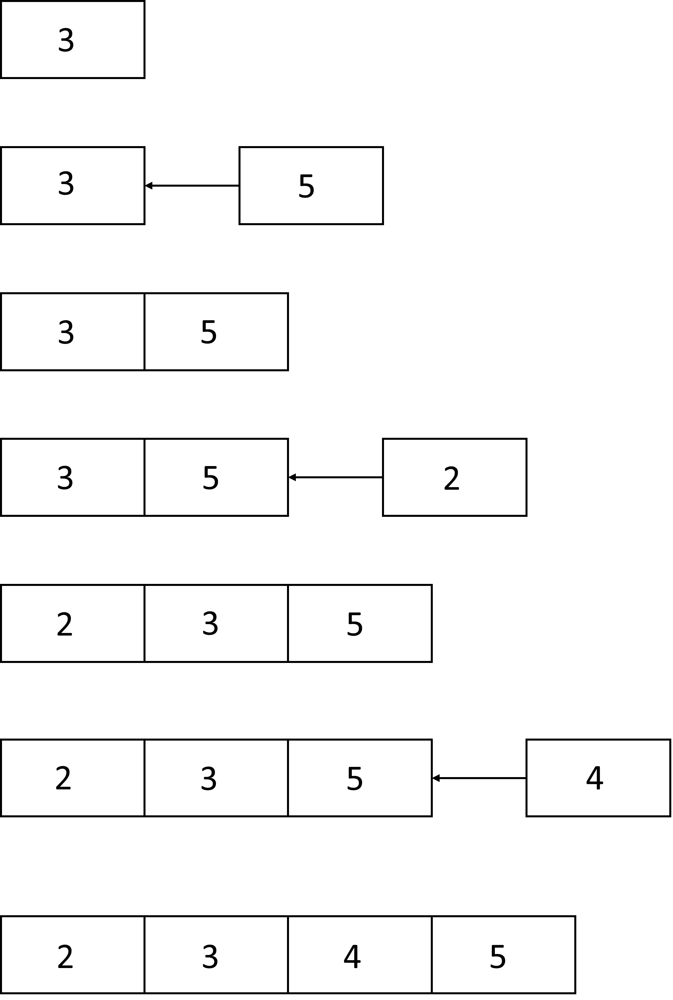

Sometimes the data could come in a stream form (i.e. instead of coming from a defined set, it is a never ending flow of information). So in this case what you have got is an endessly growing database, where you are adding a row for each new observation. The Online algorithms are a new kind of algorithms capable of updating values starting from a stream of data. This way we can update the current value using the last value obtained. In other terms, an online algorithm is one that can process the input step-by-step, in the order than the input is given to it, without having the whole input available from the beginning.
For example, suppose we have a data stream \(x_1, x_2, \dots, x_n\) coming from a trading stock. It is an example of endless flow of data. If we need to compute the average price, we can't use the classical arithmetic average formula, but instead we need a way of updating the mean at each new \(n\)-th value \(x_n\).
In the case of the average the right formula is the following: \[ \bar{x}_{n+1} = \bar{x}_n + \frac{(x_i - \bar{x}_n)}{n} \] where \(\frac{(x_i - \bar{x}_n)}{n}\) is the increment or decrement. The above formula is called recurrence formula for the mean. Below are two of the most famous examples of online algorithms.
Insertion sort
A simple example of online algorithm is the insertion sort. Infact it select one input element each iteration and calculates a partial solution
without considering future elements. Because it does not knows the whole input, it make decision that later turn out not to be optimal.
Despite this insertion sort produces the optimum result.

As we can see from the above image, each line (iteration), the algorithm receives only partial input, and compute the new input taking account the previous one.Pseudocode:
i ← 1
while i < length(A)
j ← i
while j > 0 and A[j-1] > A[j]
swap A[j] and A[j-1]
j ← j - 1
end while
i ← i + 1
end while
Welford's online algorithm
This algorithm is able to compute the variance in a single pass, inspecting each value \(x_i\) only one time. This is useful when there isn't enough
storage to keep all the values. To update the mean and the variance of the sequence, given a new element \(x_n\), the following formulas can be used:
\[ \bar{x}_n = \frac{(n-1)\bar{x}_{n-1} + x_n}{n} = \bar{x}_{n-1} + \frac{x_n - \bar{x}_{n-1}}{n} \]
\[
\sigma_{n}^{2} = \frac{(n-1)\sigma_{n-1}^{2} + (x_{n} - \bar{x}_{n-1})(x_{n} - \bar{x}_{n})}{n}
= \sigma_{n-1}^{2} + \frac{(x_{n} - \bar{x}_{n-1})(x_{n} - \bar{x}_{n}) - \sigma_{n-1}^{2}}{n}.
\]
\[
s_{n}^{2} = \frac{n-2}{n-1}\,s_{n-1}^{2} + \frac{(x_{n} - \bar{x}_{n-1})^{2}}{n}
= s_{n-1}^{2} + \frac{(x_{n} - \bar{x}_{n-1})^{2}}{n} - \frac{s_{n-1}^{2}}{n-1}, \quad n > 1
\]
where \(\bar{x}_n\) denotes the sample mean of the first \(n\) samples; \(\sigma_{n}^{2}\) their biased sample variance
and s_{n}^{2} their unbiased sample variance.
an example of implementation for the Welford's algorithm could be in Python:
# For a new value new_value, compute the new count, new mean, the new M2.
# mean accumulates the mean of the entire dataset
# M2 aggregates the squared distance from the mean
# count aggregates the number of samples seen so far
def update(existing_aggregate, new_value):
(count, mean, M2) = existing_aggregate
count += 1
delta = new_value - mean
mean += delta / count
delta2 = new_value - mean
M2 += delta * delta2
return (count, mean, M2)
# Retrieve the mean, variance and sample variance from an aggregate
def finalize(existing_aggregate):
(count, mean, M2) = existing_aggregate
if count < 2:
return float("nan")
else:
(mean, variance, sample_variance) = (mean, M2 / count, M2 / (count - 1))
return (mean, variance, sample_variance)
The above algorithm is not very prone to loss of precision, but is not very efficient because of the division operation inside the loop.